Code
pkgs <- c('tableone', 'dplyr', 'data.table', 'gt')
lapply(pkgs, library, character.only = T)
data <- read.csv2('/Users/giacomobiganzoli/Desktop/Statistica Applicata alla Ricerca Biomedica - R/STAT DESCRITTIVA AP/zhu.csv', na = '.')Dopo aver definito gli obiettivi dello studio si deve pianificare la raccolta delle variabili in modo tale da valutare correttamente il raggiungimento degli obiettivi e di caratterizzare il campione in studio.
Variabili legate alla valutazione dello stato di salute del soggetto.
Se è prevista una terapia: variabili legate alle modalità di somministrazione, eventuali modifiche di dosaggio, rilevazione di effetti collaterali, efficacia.
Variabili che potenzialmente potrebbero influenzare lo stato di salute e/o l’efficacia della terapia.
Altre variabili che caratterizzano il soggetto ‘’clinicamente’’ e ‘’demograficamente’’.
Vitamin D is a hormone that has long been related to bone metabolism. Recent evidence, however, has suggested links between lower vitamin D status and higher susceptibility for type 2 diabetes (T2DM) dyslipidemia, hypertension and obesity, all of which are major components of metabolic syndrome (MS).
Aims: To investigated the associations of vitamin D status (i.e., serum 25(OH)D concentration) with markers of metabolic health and metabolic syndrome (MS), as well as possible gender differences in these associations, with metabolic syndrome (MS) for a sample from Shanghai, China.
Methods: Demographic and anthropometric data, as well as 25-hydroxyvitamin D (serum 25(OH)D), blood glucose, and lipid concentrations were obtained for 508 urban residents aged 19–70 years.
Quali tra le seguenti caratteristiche sono associate alla presenza di sindrome metabolica?
Vitamin D status : (ng/mL)
Age (years)
Gender (M/F)
lifestyle: current smokers(yes/no); Alcohol use (yes/no); Sleep Duration (hours/day); Outdoor PA (hours/week)
La modalità di rilevazione delle variabili indicate definisce la loro tipologia
Genere: M/F abitudine al fumo (si/no); consumo abituale di alcool (si/no); Presenza di sindrome metabolica (si/no).
Ore di sonno per notte: come calcolarle? Riportate con approssimazione a numeri interi o con decimali? E quanti? Ore di attività fisica all’aria aperta: come calcolarle? Riportate con approssimazione a numeri interi o con decimali? E quanti?
Identificare le caratteristiche del campione di soggetti studiati.
Confrontare le casistiche di diversi studi: se i risultati di diversi studi differiscono una delle cause potrebbe essere la differente composizione dei campioni per variabili clinico/biologiche rilevanti.
Identificare le caratteristiche delle distribuzioni delle variabili nella fase preliminare al test statistico.
Una serie completa di dati non fornisce necessariamente informazioni facilmente interpretabili → trovare un compromesso tra sintesi ed informazioni rilevanti.
1) fornire indicazioni sulla forma della distribuzione di frequenza delle variabili rilevate
• Per le variabili categoriche e ordinali si può utilizzare una tabella di frequenza e/o una rappresentazione grafica.
• Per le variabili numeriche discrete o continue si ricorre a rappresentazioni grafiche.
2) sintetizzare la distribuzione mediante indici di tendenza centrale e dispersione (utilizzate nel caso di variabili su scala numerica).
• Indici di tendenza centrale: un valore della variabile che dovrebbe essere ‘’rappresentativo’’ della distribuzione
• Indici di dispersione: quanto sono dispersi i valori della variabile attorno alla tendenza centrale maggiore è la dispersione e minore è la ‘’rappresentatività’’ dell’indice di tendenza centrale.
• La scelta degli indici di sintesi dipende dalla scala di misura della variabile e dalla forma della distribuzione di frequenza
La prima parte di ogni articolo fornisce una sintesi dei dati per la descrizione della casistica
pkgs <- c('tableone', 'dplyr', 'data.table', 'gt')
lapply(pkgs, library, character.only = T)
data <- read.csv2('/Users/giacomobiganzoli/Desktop/Statistica Applicata alla Ricerca Biomedica - R/STAT DESCRITTIVA AP/zhu.csv', na = '.')tbl1 <- data%>%dplyr::select(Gender, Age, Smoking, Alcohol, Sleep, OutdoorPA, MS)%>%
mutate(across(c(Gender, Smoking, Alcohol, MS), as.factor))
colnames(tbl1) <- c('Gender', 'Age', 'Current Smoker', 'Alcohol', 'Sleep Duration (hours/day)', 'Outdoor PA (hours/week)', 'Metabolic Syndrome')
tbl1 <- CreateTableOne(data = tbl1)%>%print(., showAllLevels = T)
level Overall
n 546
Gender (%) 1 164 (32.3)
2 344 (67.7)
Age (mean (SD)) 50.15 (13.23)
Current Smoker (%) 0 409 (85.6)
1 69 (14.4)
Alcohol (%) 0 443 (92.7)
1 35 ( 7.3)
Sleep Duration (hours/day) (mean (SD)) 7.03 (1.03)
Outdoor PA (hours/week) (mean (SD)) 9.16 (4.78)
Metabolic Syndrome (%) 0 367 (76.3)
1 114 (23.7) Per le variabili categoriche il numero di soggetti in ogni categoria con le %
Per le variabili numeriche la sintesi è fornita come media +/- deviazione standard
Come si interpreta questo dato? Se la distribuzione è simmetrica (e bene approssimata da una Gaussiana) il 68% dei valori è compreso nell’intervallo media +/- deviazione standard
Ma se la variabile non ha distribuzione simmetrica e/o non è bene approssimata da una Gaussiana questa proprietà non vale. Perché scrivere allora media +/- deviazione standard?
La media aritmetica: è sempre un buon indice di tendenza centrale?
Media aritmetica (scala numerica continua, numerica discreta): è calcolata sommando tutte le osservazioni e dividendo per il totale.
utilizzando una notazione sintetica: per N osservazioni convalori \(X_1, X_2,..,X_N, \ media = \frac{(X_1+X_2+...X_N)}{N} = \sum_{i}^{N}\frac{X_i}{N}\)
È la misura più utilizzata ma è influenzata dai valori estremi: quei valori della distribuzione che sono ‘’distanti’’ dagli altri in quanto sono decisamente maggiori (spostano la media verso valori più elevati) o decisamente minori (spostano la media verso valori più bassi).
⚠️ Quando le distribuzioni non sono simmetriche la media non è un indice appropriato di tendenza centrale.
# Carica le librerie necessarie
library(ggplot2)
library(dplyr)
# Numero di campioni per ogni distribuzione
n_samples <- 1000000
# Parametri per la distribuzione Beta asimmetrica a destra (alpha < beta)
alpha_destra <- 2
beta_destra <- 5
# Parametri per la distribuzione Beta asimmetrica a sinistra (alpha > beta)
alpha_sinistra <- 5
beta_sinistra <- 2
# Genera campioni Beta asimmetrici
beta_asimmetrica_destra <- rbeta(n_samples, shape1 = alpha_destra, shape2 = beta_destra)
beta_asimmetrica_sinistra <- rbeta(n_samples, shape1 = alpha_sinistra, shape2 = beta_sinistra)
# Crea un data frame per entrambe le distribuzioni
dati <- data.frame(
valore = c(beta_asimmetrica_destra, beta_asimmetrica_sinistra, rnorm(n_samples, 0.5, .5)),
tipo = rep(c("Asimmetrica a Destra", "Asimmetrica a Sinistra", 'Normale'), each = n_samples)
)
# Traccia i grafici delle distribuzioni
ggplot(dati, aes(x = valore, fill = tipo)) +
geom_density(alpha = 0.6) +
facet_wrap(~tipo, scales = "free") +
labs(title = "Distribuzioni Beta Asimmetriche a Destra e a Sinistra",
x = "Valore", y = "Densità") +
theme_minimal()+
theme(legend.position = 'none')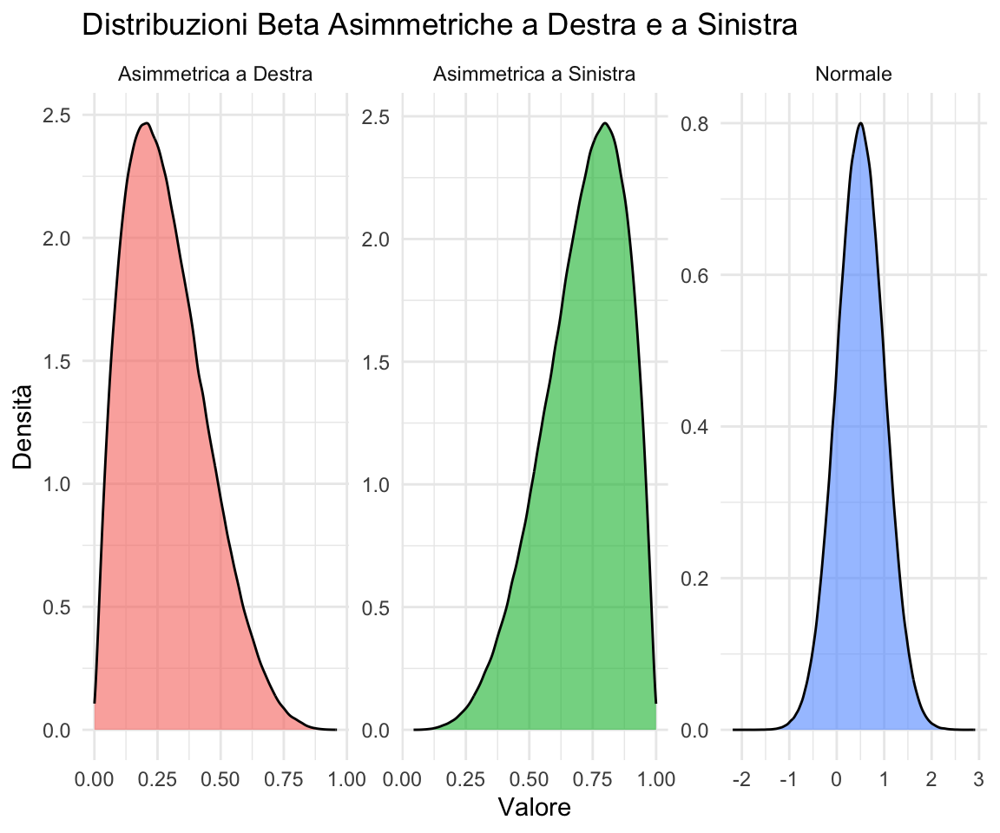
Devianza, Varianza e deviazione standard
utilizzano come misura di distanza dalla media lo scarto quadratico
considerando le osservazioni \(x_1,x_2...x_n\) , la cui media è \(\overline{x}\)
La devianza è:: \((x_1-\overline{x})^2 + (x_2-\overline{x})^2 + (x_3-\overline{x})^2+...+(x_n-\overline{x})^2 = \sum_i^N(x_i-\overline{x})^2\)
La varianza è ottenuta dividendo la devianza per N-1, ovvero i ‘gradi di libertà’: \(s^2 = \frac{(x_1-\overline{x})^2 + (x_2-\overline{x})^2 + (x_3-\overline{x})^2+...+(x_n-\overline{x})^2 }{N-1}= \frac{\sum_i^N(x_i-\overline{x})^2}{N-1}\)
varianza: l’unità di misura coincide con quella delle osservazioni (al quadrato), quindi non bene interpretabile, per questo si usa la deviazione standard: \(s = \sqrt{s^2}\)
Quando le distribuzioni non sono simmetriche la varianza non è un indice appropriato di tendenza centrale. Come la media è influenzata dai valori estemi, anche la deviazione standard è influenzata dai valori estremi (ancora più della media). In caso di asimmetria accentuata la deviazione standard è più elevata della media → Media +/- deviazione standard non ha senso dal momento che media – deviazione standard è un numero < 0!
Età: variabile numerica su scala discreta: infatti è misurata in «anni compiuti». Non sono possibili valori con cifre decimali ma solo interi 18,19,20,21,…..
plot(table(data$Age), ylab = '# times', xlab = 'Age (yrs)')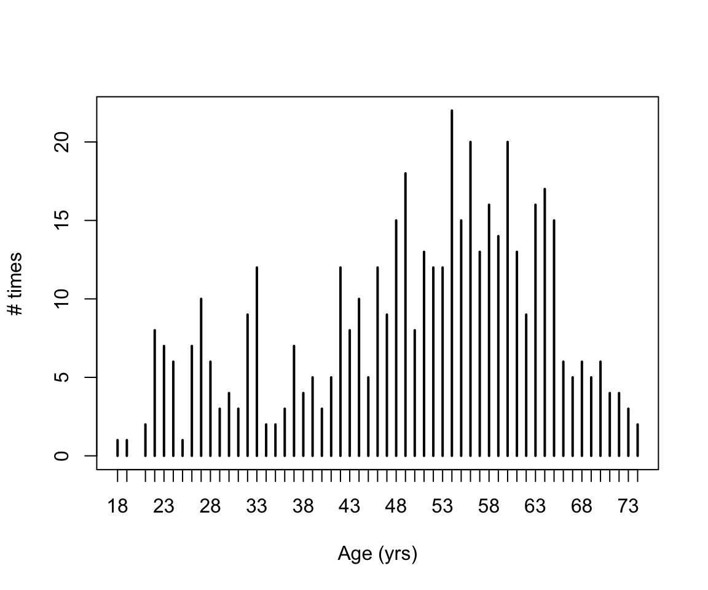
Ore di sonno variabile numerica su scala discreta : infatti la variabile è riportata in ore e quindi sono possibili solo valori interi, 5,6,7,8,9
plot(table(data$Sleep), ylab = '# times', xlab = 'Sleep (hours/day)')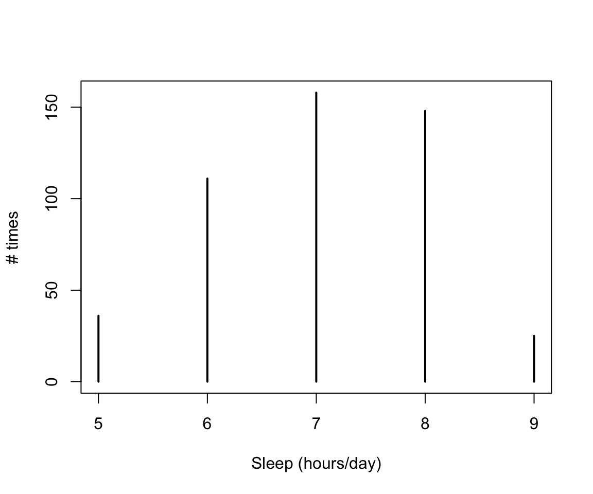
Ore di attività fisica per settimana : è calcolata come media e quindi «in teoria» potrebbero assumere tutti i possibili valori e considerare la misura su scala continua ma in realtà sono presenti solo 4 possibili valori 1.8, 3.5, 7 e 14 quindi trattata come variabili numerica discreta.
plot(table(data$Sleep), ylab = '# times', xlab = 'Sleep (hours/day)')Vitamina D: variabile numerica continua (assume valori decimali)
plot(table(data$VD), ylab = '# times', xlab = 'vitD (u/L)')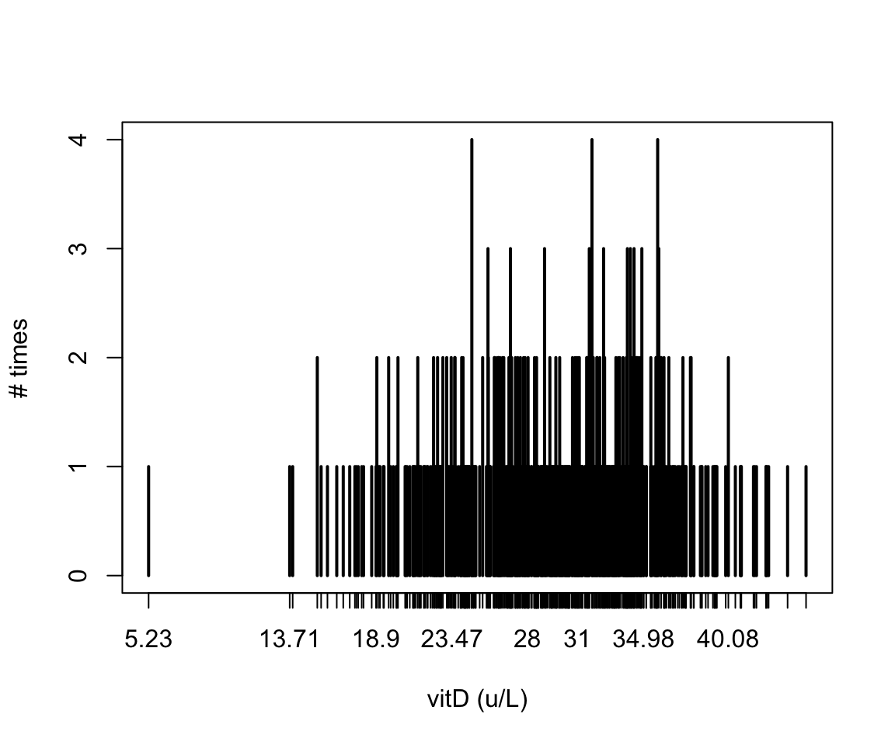
hist(data$VD, breaks = 30)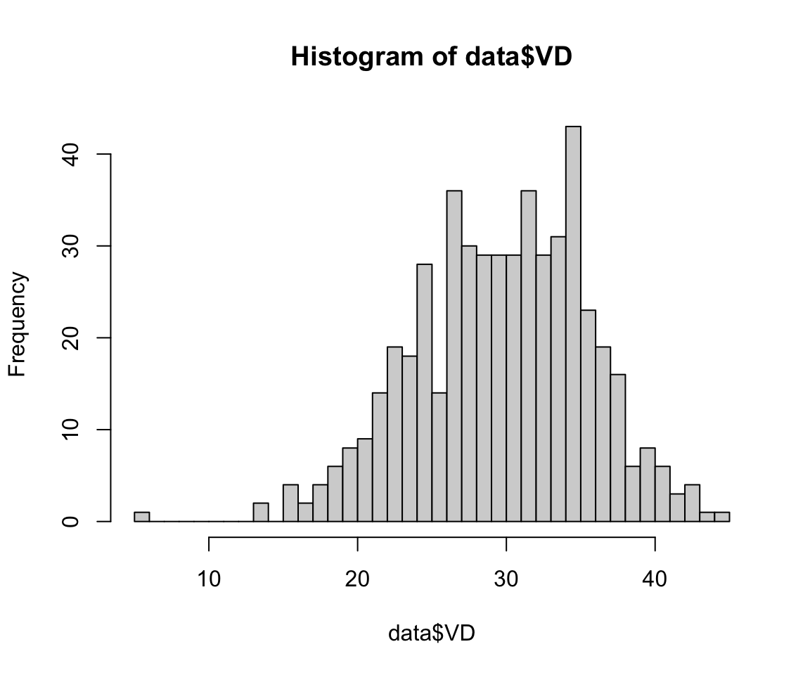
for(b in seq(10,110,20)){
hist(data$VD, breaks = b, main = paste('# bins', b),
xlab = 'vitD (u/L)')
}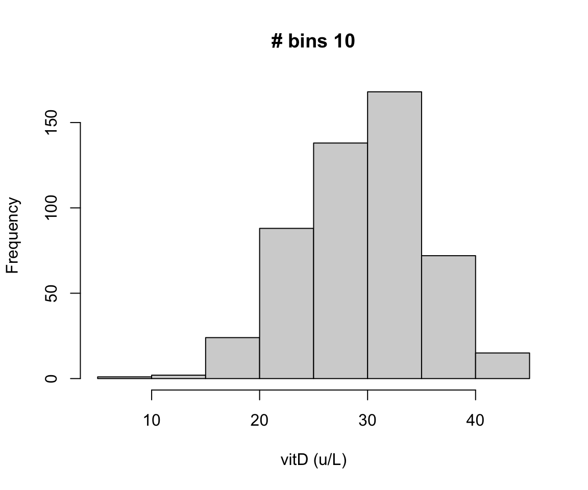
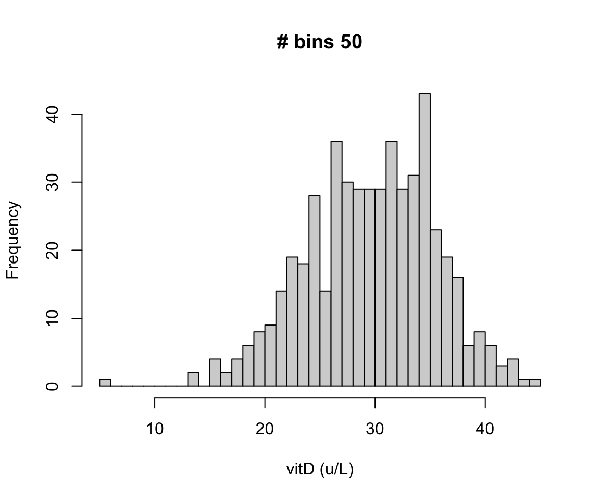
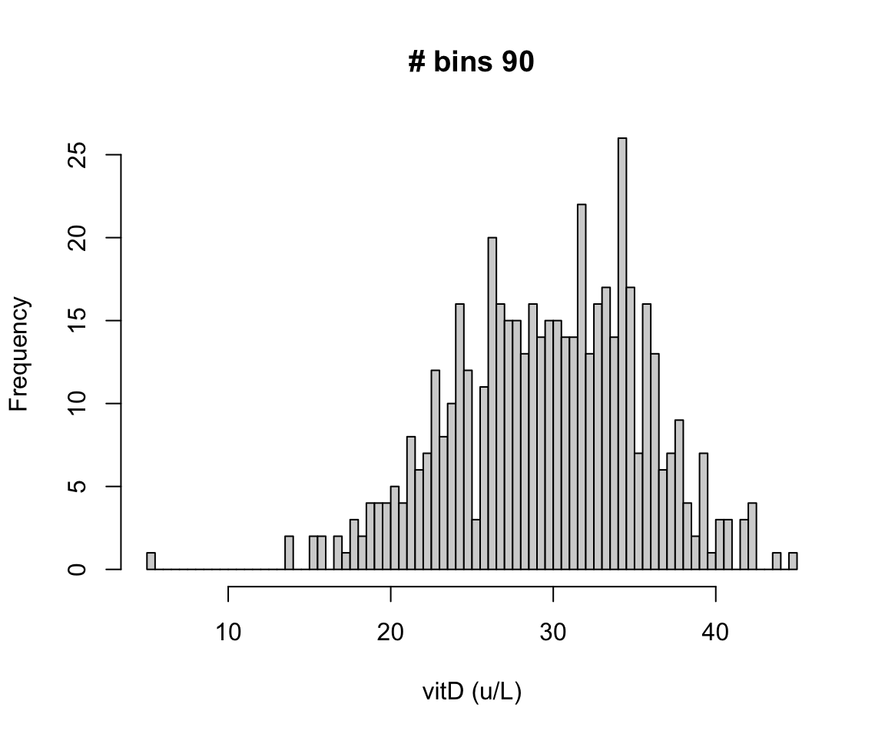
La media non è l’unico indice di tendenza centra le che si può considerare. In presenza di valori estremi nella distribuzione è preferibile ricorrere adun indice di tendenza centrale che sia meno influenzato dalla presenzadi valori estremi rispetto alla media (più robusto) in presenza di distribuzioni asimmetriche è preferibili ricorrere adun indice di tendenza centrale che meglio rappresenti il «centro» delladistribuzione.
Un indice che ha tale caratteristica è la mediana
La mediana (m) di un insieme finito di osservazioni è quel valore della variabile che divide l’insieme ordinato delle osservazioni in due parti in modo tale che il numero delle osservazioni che precede la mediana sia uguale al numero di osservazioni successive alla mediana. Una percentuale ≤ al 50% delle osservazioni ha valore della variabile minore della mediana e una percentuale ≤ al 50% ha valore della variabile maggiore della mediana
per calcolarla occorre:
ordinare le N osservazioni in senso crescente:
age2 <- data$Age[!is.na(data$Age)]
age2 <- sort(age2)identificare la posizione della mediana:
se N è dispari la mediana si trova in corrispondenza della osservazione xq dove q=(N + 1)/2 → m
se N è pari la mediana si trova al centro tra xq ed xq+1 dove q=N/2 e q+1=(N/2) + 1
length(age2) # PARI[1] 476q = length(age2)/2
q[1] 238q1 = (length(age2)/2) +1
q1[1] 239Calcolare la mediana m = 0.5 ∗ (xq+1 + xq)
m = 0.5 * (age2[q] + age2[q1])
m[1] 53Con R la funzione ‘median’ velocizza notevolmente il processo
median(data$Age, na.rm = TRUE)[1] 53plot(table(data$Age), ylab = 'Frequency', xlab = 'Age (yrs)', main = 'In rosso la mediana della distribuzione')
abline(v = as.character(median( data$Age, na.rm = T)), lwd = 2, col = 'red')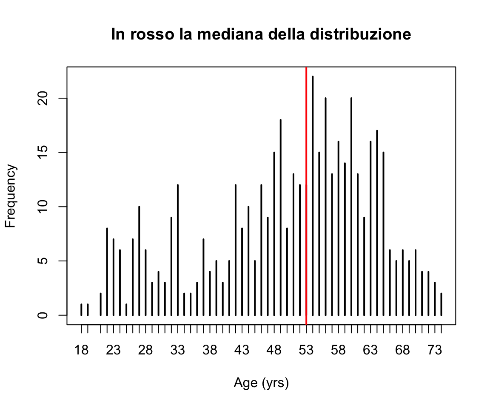
plot(table(data$Age), ylab = 'Frequency', xlab = 'Age (yrs)', main = 'In rosso la mediana della distribuzione \n in blu la media della distribiuzione')
abline(v = as.character(median( data$Age, na.rm = T)), lwd = 2, col = 'red')
abline(v = as.character(mean( data$Age, na.rm = T)), lwd = 2, col = 'blue')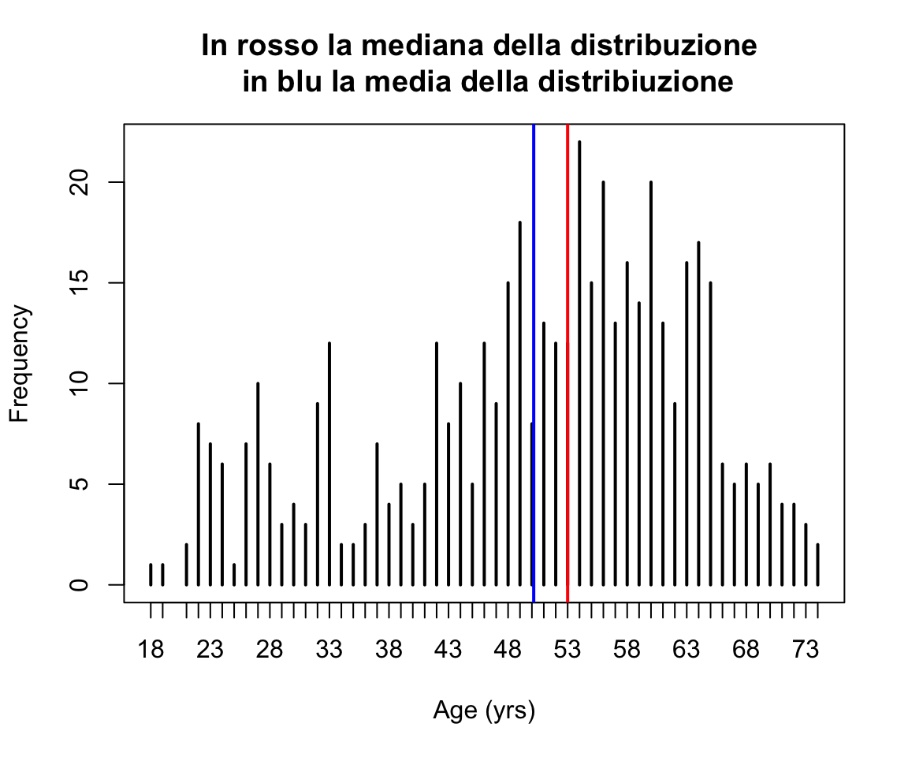
• differenza tra il 3° quartile (Q3) e il 1° quartile (Q1).
In una situazione «ideale»
Q3 è il valore che suddivide la distribuzione in modo tale che il 75% delle osservazioni è < di Q3 e il 25% è maggiore di Q3
Q1 è il valore che suddivide la distribuzione in modo tale che il 25% delle osservazioni è < di Q1 e il 75% delle osservazioni è > Q1
Tra Q3 e Q1 è compresa una percentuale pari al 50% delle osservazioni
q1 = quantile(data$VD, probs = c(.25), na.rm = T)
q1 25%
25.7625 q3 = quantile(data$VD, probs = c(.75), na.rm = T)
q3 75%
34.0125 hist(data$VD, breaks = 30, axes = F)
axis(1, at = round(seq(min(data$VD, na.rm = T), max(data$VD, na.rm = T), length.out = 10),2))
axis(2)
abline(v = q1, lwd =2, col = 'red')
abline(v = q3, lwd =2, col = 'blue')
abline(v = median(data$VD, na.rm = T), lwd =2, col = 'purple')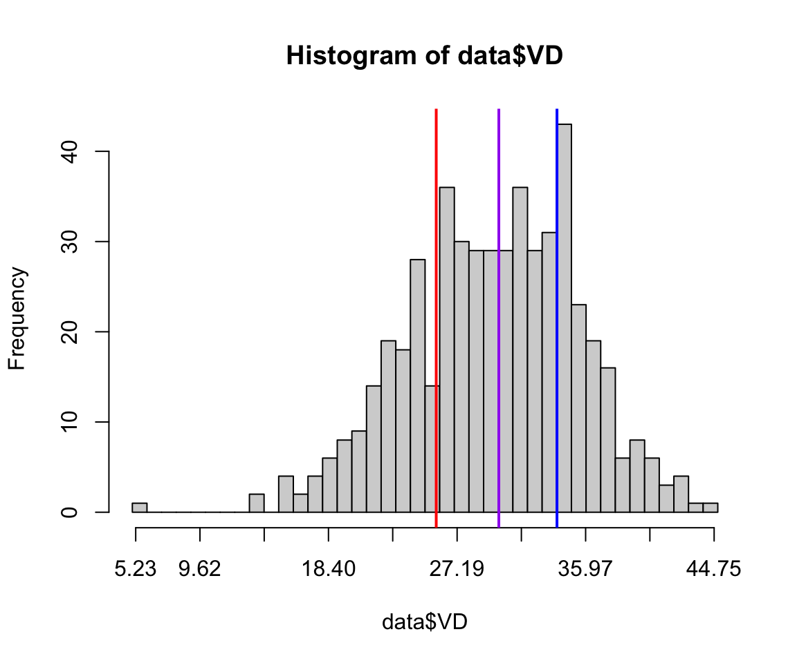

boxplot(data$VD, ylab = 'Vitamin D (U/L)')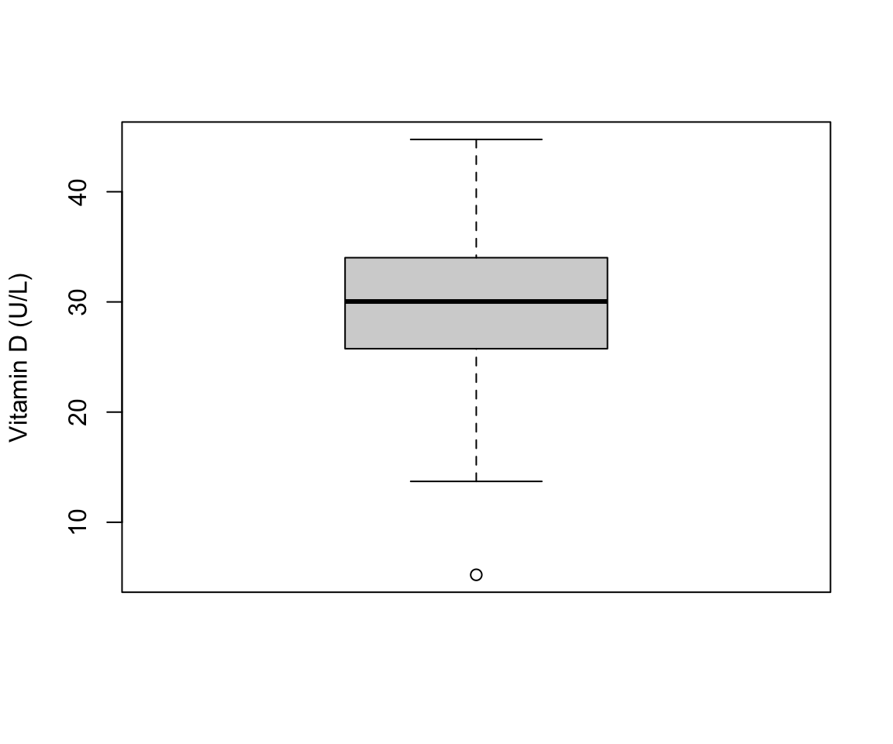
• è costruito dalle seguenti caratteristiche della distribuzione: il minimo, Q1, mediana, Q3, il massimo
• la riga all’interno del box è la mediana.
• i lati del box sono Q1 (basso) e Q3 (alto);
• l’altezza del box è il range interquartile (Q3-Q1)
• le linee che si estendono oltre il box (wiskers) contengono il 25% delle osservazioni e sono calcolate come segue: wb: Q1-1.5(Q3-Q1) e wa: Q3+1.5(Q3-Q1)se wb è < del minimo dei dati si pone wb = al minimo dei datise wa è > del massimo dei dati si pone wa = al massimo dei dati
• i valori che si estendono oltre gli wiskers sono definiti «outliers»
Ma che utilità può avere il box-plot?
evidenziare osservazioni outliers: sono dati «atipici» rispetto agli altri quindi è opportuno controllarli, potrebbero essere errori di rilevazione oppure soggetti con particolari condizioni che devono essere valutati a parte
evidenziare se la distribuzione è simmetrica o asimmetrica: se la distribuzione è asimmetrica non è opportuno usare la media come indice di tendenza centrale, invece la mediana è comunque corretta!
quando si confrontano due distribuzioni fornisce una indicazione sulla differenza di tendenza centrale, di dispersione e sul grado di sovrapposizione dei valori della variabile nelle due distribuzioni
data$MS <- as.character(data$MS)
boxplot(data$VD~data$MS, ylab = 'Vitamin D (U/L)', xlab = 'MetS')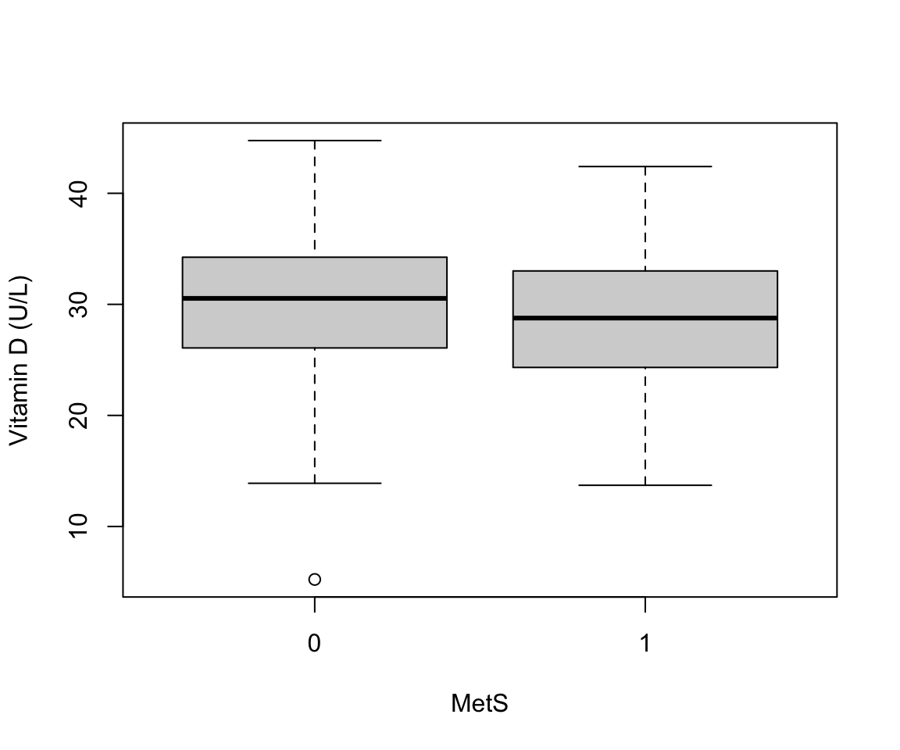
boxplot(data$Age~data$MS, ylab = 'Age (yrs)', xlab = 'MetS')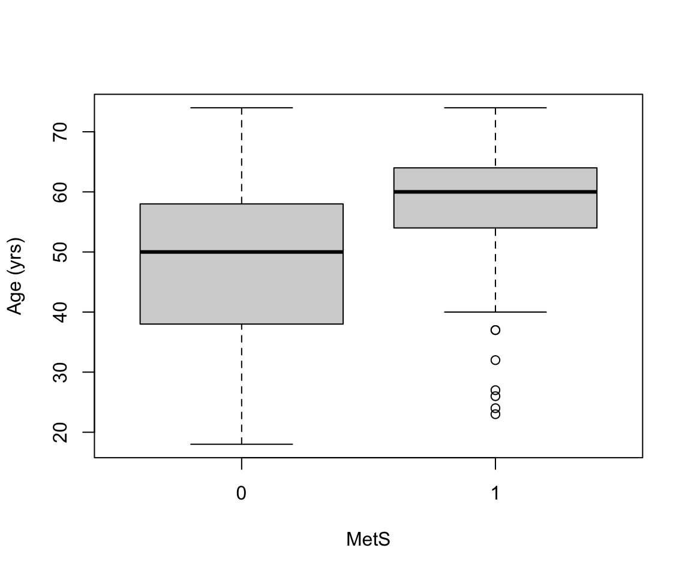
La distribuzione cumulata: per ogni valore X di vit.D è la frequenza di soggetti che hanno valori di vit. D <= X.
ecdfDIBIC <- function(x){
x <- as.data.frame(table(x))
x$cum.freq <- cumsum(x$Freq)
x$perc <- round(x$cum.freq/sum(x$Freq),2)
colnames(x)[1] <- 'val'
x$val <- as.numeric(as.character(x$val))
x
}
ecdf.age.si <- ecdfDIBIC(data$Age[data$MS == 1])
ecdf.age.no <- ecdfDIBIC(data$Age[data$MS == 0])
plot(ecdf.age.si$val, ecdf.age.si$perc, type = 's', lwd = 2, main = 'ECDFs of Age',
xlab = 'Age (yrs)',ylab = 'P(X <=x)')
lines(ecdf.age.no$val, ecdf.age.no$perc, type = 's', col = 'purple', lwd = 2)
abline(h = c(.25, .5, .75), lty = 3)
legend('bottomright', c('MetS', 'No MetS'), lty = 1, col = c('black', 'purple'),
lwd = 2)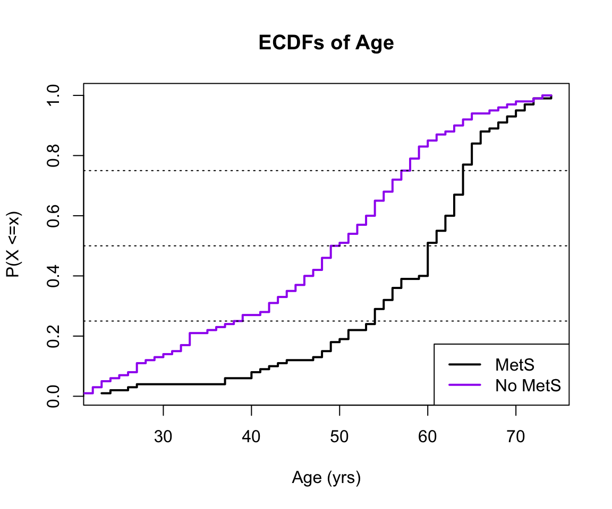
find.values <- function(ecdf, p){
max(ecdf$val[ecdf$perc <= p])
}
find.values(ecdf = ecdf.age.si, p = .75)[1] 63all <- ecdfDIBIC(data$VD)
ms.si <- ecdfDIBIC(data$VD[data$MS == 1])
ms.no <- ecdfDIBIC(data$VD[data$MS == 0])
plot(all$val, all$perc, type = 's', xlab = 'Vitamin D (U/L)', ylab = 'P(X <= x)', lwd = 2, main = 'ECDFs of Vitamin D', axes = F)
lines(ms.si$val, ms.si$perc, type = 's', xlab = 'Vitamin D (U/L)', ylab = '%', lwd = 2, col = 2)
lines(ms.no$val, ms.no$perc, type = 's', xlab = 'Vitamin D (U/L)', ylab = '%', lwd = 2, col = 3)
abline(h = c(.25, .5, .75), lty = 3)
axis(1, at = seq(5,45,1))
axis(2, at = seq(0,1,.05))
legend('bottomright', c('All', 'MetS', 'No Mets'),lty = 1, col = c(1,2,3), lwd = 2 )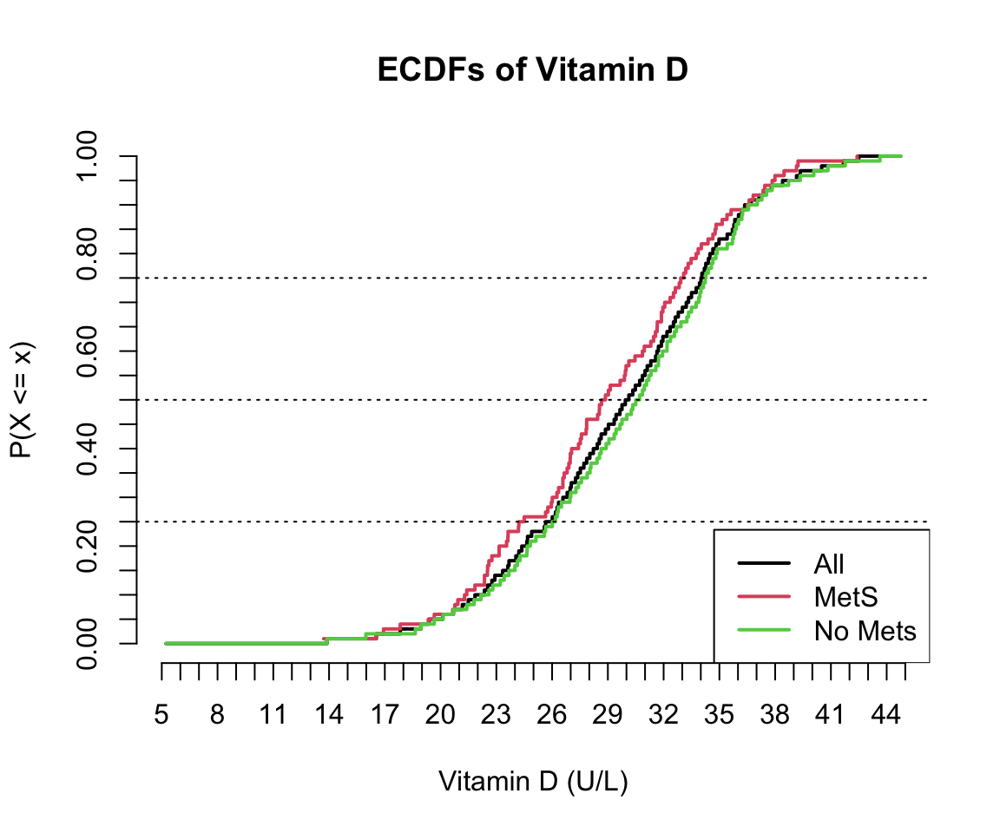
par(mfrow = c(1,3))
hist(data$VD[data$MS == 1], breaks = 30, main = 'MetS', xlab = 'Vitamin D (U/L)', axes = F)
axis(1, at = seq(5,50,5))
axis(2)
hist(data$VD[data$MS == 0], breaks = 30, main = 'No MetS', xlab = 'Vitamin D (U/L)', axes = F)
axis(1, at = seq(5,50,5))
axis(2)
hist(data$VD, breaks = 30, main = 'All', xlab = 'Vitamin D (U/L)', axes = F)
axis(1, at = seq(5,50,5))
axis(2)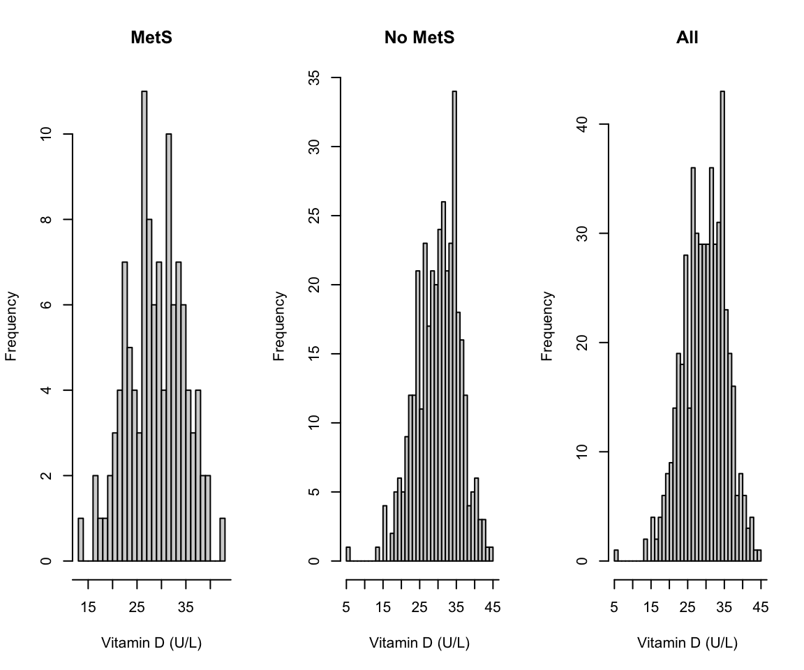
Grafici vietati:
https://biostat.app.vumc.org/wiki/pub/Main/TatsukiRcode/Poster3.pdf
R è un linguaggio di programmazione open source ampiamente utilizzato per l’analisi statistica e la creazione di grafici. È stato creato da Ross Ihaka e Robert Gentleman e la sua prima versione è stata rilasciata nel 1995.
R è diventato uno degli strumenti più popolari tra i data scientist e gli analisti dei dati, grazie alla sua vasta libreria di pacchetti che consentono di manipolare, visualizzare e analizzare grandi quantità di dati. Inoltre, la sua sintassi intuitiva e flessibile lo rende facile da imparare anche per coloro che non hanno una formazione di programmazione formale.
Oltre alla sua capacità di analisi statistica, R è anche utilizzato in diverse applicazioni come la creazione di dashboard interattivi, la creazione di report automatizzati e la costruzione di modelli di apprendimento automatico.
Inoltre, R è supportato da una vasta comunità di sviluppatori e utenti che contribuiscono alla sua crescita, alla sua manutenzione e alla creazione di nuovi pacchetti e funzionalità. Grazie a tutto questo, R è diventato uno strumento essenziale per chiunque lavori con i dati.
Se non avete ancora installato R, potete seguire questi semplici step per poterlo installare velocemente:
Cliccate su questo link
Accederete ad una pagina come questa:


Una volta installato correttamente R, apritelo. Vi si aprirà una finestra, definita console, di questo tipo:

Provate a digitare nella console, dopo il simbolo ‘>’, questo codice:
plot(c(1,2,3,4))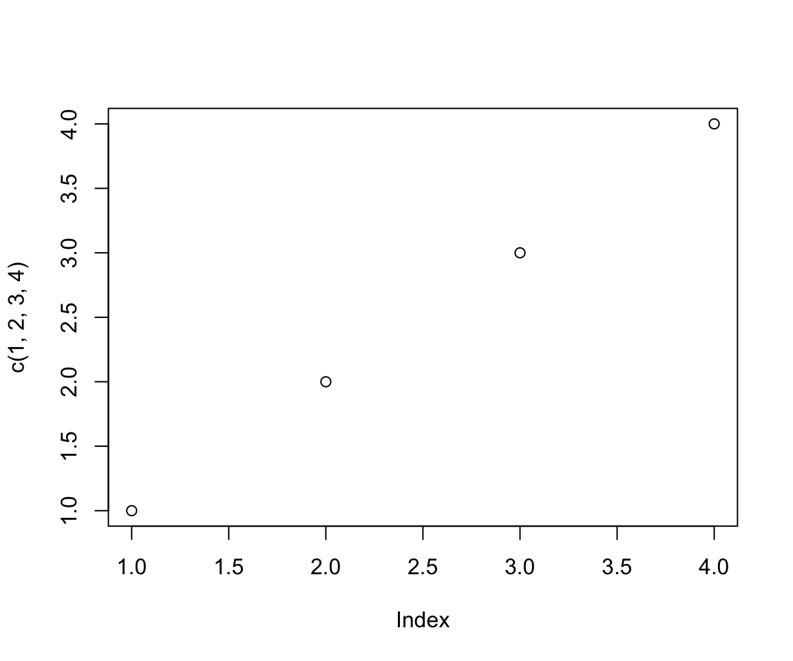
Se vi appare un grafico come quello sopra riportato, allora avete installato R in modo corretto e siete pronti per poterlo utilizzare in classe! 🤘
Un altro programma molto utile per interfacciarsi con R è RStudio.
RStudio is an integrated development environment for R, a programming language for statistical computing and graphics. It is available in two formats: RStudio Desktop is a regular desktop application while RStudio Server runs on a remote server and allows accessing RStudio using a web browser.
Per installare R Studio in modo semplice cliccate questo link e seguite le istruzioni che sono descritte nella pagina.
❗ Se avete già installato R, non dovete far altro che seguire lo step 2 ed installe RStudio.

Una volta scaricato ed installato, se aprirete RStudio accederete ad una pagina di questo tipo:

Giacomo: giacomo.biganzoli@unimi.it

Generalmente, per poter importare ed analizzare i dati che avete accuratamente raccolto, scriverete un ‘programma’ in uno script. Un programma non è altro che un elenco di oggetti e funzioni che devono essere eseguite per ottenere i risultati desiderati. Lo script viene successivamente eseguito ed interpretato da R in modo tale da ottenere i risultati richiesti.
I principali tipi di oggetti in R sono:
stringhe di caratteri
vettori
matrici
liste
data.frames
L’oggetto che più utilizzeremo sarà il data.frame. Pensate al data.frame come la forma di dati tabulati che trovereste se apriste un comunissimo file .xlsx o .csv in Excel.
In R, le funzioni servono a ‘trasformare’ un oggetto in un altro oggetto all’interno dell’ambiente R. R è ricco di funzioni di base e funzioni scritte da esperti per poter fare una miriade di cose. Inolte, in R è possibile scrivere le proprie funzioni (solo per utilizzatori avanzati!).
Ad esempio, digitando nello script il seguente codice, assegno ad un oggetto che chiamo boomer la stringa di caratteri ‘I am smiling because i am using R’. Se successivamente applico la funzione print() all’oggetto boomer, R stampa cosa è assegnato a boomer.
boomer <- "I am smiling because i am using R" # assegno all'oggetto boomer una stringa di caratteri
print(boomer) # eseguo il print dell'oggetto per vedere cosa riporta[1] "I am smiling because i am using R"Se invece consideriamo un vettore, inteso come una sequenza di valori numerici o di caratteri, possono essere utili altre funzioni. Ad esempio, pensate di intervistare cinque vostri colleghi per chiedere loro quante visite ospedaliere hanno eseguito negli ultimi 5 anni. I cinque colleghi vi rispondono nel seguente modo:
5 visite
3 visite
2 visite
1 visita
0 visite
Allora possiamo assegnare all’oggetto visite un vettore definito in questo modo:
visite = c(5,3,2,1,0) # genero un nuovo vettore 'visite'
print(visite) # guardo cosa contiene il vettore 'visite'[1] 5 3 2 1 0Se ad esempio sono interessato al totale delle visite dei cinque colleghi intervistati, posso applicare al vettore visite la funzione sum()
sum(visite) # applico la funzione sum() per calcolare il totale delle visite dei cinque colleghi[1] 11Se invece fossi interessato alla media del numero di visite dei cinque colleghi intervistati, posso applicare a visite la funzione mean()
mean(visite) # applico la funzione mean() per calcolare il totale delle visite dei cinque colleghi[1] 2.2❗ questi ultimi due calcoli (totale con la funzione sum() e media con la funzione mean() ) non sono stati assegnati ad alcun oggetto. Se nella nostra sessione di analisi volessimo utilizzare nuovamente la media e il totale delle visite, possiamo assegnare a due nuovi oggetti, rispettivamente mean_visite e tot_visite, il calcolo della media e del totale del numero di visite.
mean_visite <- mean(visite) # assegno all'oggetto mean_visite il calcolo della media del vettore visite
tot_visite = sum(visite) # assegno all'oggetto tot_visite il calcolo del totale del vettore visite
print(mean_visite)[1] 2.2print(tot_visite)[1] 11Se fossi interessato, per qualche motivo particolare, a calcolare la differenza tra tot_visite e mean_visite, allora, semplicemente, potrei digitare il codice:
tot_visite - mean_visite # faccio la differenza tra totale e media[1] 8.8e assegnare a diff_visite questo calcolo:
diff_visite = tot_visite - mean_visite # assego ad un oggetto diff_visite la differenza tra totale e media.
print(diff_visite)[1] 8.8⚠️ Probabilmente avrete notato che per assegnare vettori o stringhe di caratteri ad oggetti utilizzo indistintamente il simbolo ‘=’ o il simbolo ‘<-’. Nonostante l’utilizzo di uno o dell’altro simbolo abbia generato grande dibattito fra i vari R nerds nel mondo:
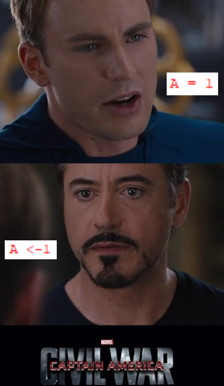
Noi d’ora in poi, per comodità, utilizzeremo il simbolo ‘=’.
⚠️ Inoltre, avrete notato che dopo ogni codice scritto, segue quasi sempre un commento al codice preceduto da un #. E buona norma commentare il codice scritto. Questo perché, se in futuro vorrete riprendere il codice per le analisi oppure inviarlo ad un collega per farlgielo utilizzare, saprete perché era stata utilizzata tale funzione, o perché era stato creato tale oggetto etc etc…
In R le funzioni, come in matematica, si possono concatenare! Questo vuol dire che se volessi applicare ad uno stesso oggetto (A) più di una funzione (f() e g() ), al posto di creare e salvare due o più oggetti per applicare in sequenza le funzioni, potrei concatenarle in questo modo:
g( f(A) )
Esempio:
Supponiamo di aver misurato e raccolto i dati della massa corporea in kg di 5 soggetti in un vettore weight così definito c(64.679, 78.943, 60.321, 90.453, 112.765). Se volessi arrotondare i valori della massa corporea alla sola cifra intera (considerando solo i kg) e poi volessi calcolare la media dei valori, allora potrei fare in questo modo:
weight = c(64.679, 78.943, 60.321, 90.453, 112.765) # assegno al vettore weight i valori di massa corporea
mean(round(weight)) # arrotondo a numeri interi e poi eseguo la media [1] 81.4❗ L’ordine in cui applichiamo le funzioni conta. Se invertissimo l’ordine delle funzioni, il valore ottenuto è diverso:
round(mean(weight)) # eseguo la media e poi arrotondo a numeri interi [1] 81Le funzioni help(), ls(), install.packages() e library(), sono quattro funzioni essenziali. La prima serve per interrogare R sul tipo di funzioni che stiamo utilizzando. Ad esempio, se trovo la funzione mean() ma non riesco a capire cosa voglia dire e/o cosa serva, allora posso utilizzare la funzione help() al cui interno digito il nome della funzione a me sconosciuta (senza le due parentesi).
help("mean")La funzione ls() invece mi serve per vedere quali sono gli oggetti che ho salvato nella workspace di R. Sopratutto in caso di codici molto lunghi, non possiamo memorizzare tutto quello che abbiamo creato!
Se utilizzo la funzione ls(), R mi stamperà tutti gli oggetti salvati nella workspace
ls() [1] "age2" "all"
[3] "alpha_destra" "alpha_sinistra"
[5] "b" "beta_asimmetrica_destra"
[7] "beta_asimmetrica_sinistra" "beta_destra"
[9] "beta_sinistra" "boomer"
[11] "data" "dati"
[13] "diff_visite" "ecdf.age.no"
[15] "ecdf.age.si" "ecdfDIBIC"
[17] "find.values" "has_annotations"
[19] "m" "mean_visite"
[21] "ms.no" "ms.si"
[23] "n_samples" "pkgs"
[25] "q" "q1"
[27] "q3" "tbl1"
[29] "tot_visite" "visite"
[31] "weight" La funzione install.packages() mi permette di installare pacchetti di funzioni in aggiunta a quelli pre-installati, così da poter utilizzare qualsiasi tipo di funzione non di base. La funzione library() invece mi serve per caricare i nuovi pacchetti installati.
Ad esempio, voglio installare il pacchetto dplyr e caricarlo nella workspace.
#install.packages('dplyr') #installo il pacchetto dplyr
library(dplyr) # carico il pacchetto dplyr nella workspace cosi che è pronto per poter essere utilizzatoIn questa piccola sezione, vi abbiamo mostrato poche delle migliaia funzioni disponibili in R. Nel corso della Sessione 1, e nella prossima sessione, avremo modo di indicarvi ulteriori funzioni utili per l’analisi dei dati. Lungi da noi riuscire ad esaurire in poche ore tutte le funzioni disponibili per poter analizzare i vostri dati. Ma uno strumento fondamentale che potete utilizzare gratuitamente sul web è:

Un website dove vengono raccolte domande e risposte degli users di R (e non solo), cui potete fare riferimento qualora aveste dei problemi con il vostro codice, ma sopratutto voleste informazioni sull’esistenza di una data funzione. Molto spesso, le domande e/o i problemi sopraggiunti, sono già capitati ad altri users come voi!
Ora passiamo all’aspetto più importante e per alcuni il più tedioso: caricare in maniera pulita e veloce i dati che avete raccolto. Da REDCap avrete modo di scaricare i dati in forma tabulata in formato .csv, .xls, .xlsx, o txt. Il consiglio che vi diamo è di preferire il formato .txt per leggere i dati.
Come potete immaginare, in R esistono numerose funzioni per leggere i dati in ogni formato. Tra queste si annovera una funzione principale che è quella universalmente più performante, proveniente dal pacchetto utils, chiamata read.table(). La funzione legge un file in formato tabulato e ne crea un frame di dati, con i casi corrispondenti alle righe e le variabili alle colonne del file. La funzione ha i seguenti parametri:

La compilazione di questi parametri è obbligatoria, di altri è solo facoltativa.
| Parametro | Utilizzo |
|---|---|
| file | Il percorso e il nome del file da cui leggere i dati. Ogni riga della tabella appare come una riga del file. |
| header | un valore logico che indica se il file contiene i nomi delle variabili come prima riga. Se manca, il valore è determinato dal formato del file: header è impostato su TRUE se e solo se la prima riga contiene una colonna in meno rispetto al numero di colonne per le altre righe. |
| sep | Il carattere di separazione delle colonne. I valori su ogni riga del file sono separati da questo carattere. Se sep = “” (l’impostazione predefinita per read.table) il separatore è uno “spazio bianco”, cioè uno o più spazi, tabulazioni, newline o ritorni a capo. |
| dec | il carattere utilizzato nel file per i punti decimali. |
| row.names | un vettore di nomi di righe. Può essere un vettore con i nomi effettivi delle righe, oppure un numero singolo con la colonna della tabella che contiene i nomi delle righe, o una stringa di caratteri con il nome della colonna della tabella che contiene i nomi delle righe. Se esiste un’intestazione e la prima riga contiene un campo in meno rispetto al numero di colonne, per i nomi delle righe viene utilizzata la prima colonna dell’input. Altrimenti, se row.names manca, le righe vengono numerate. |
| col.names | un vettore di nomi opzionali per le variabili. L’impostazione predefinita prevede l’uso di “V” seguito dal numero della colonna. |
| skip | il numero di righe da ‘saltare’ prima che il programma legga i dati |
| colClasses | carattere. Un vettore di classi da assumere per le colonne. Se non ha nome, viene riciclato come necessario. Se con nome, i nomi vengono abbinati e i valori non specificati vengono considerati NA. |
La prima cosa da controllare sarà il path del file in cui è salvato il vostro file .txt. Questo perché dovrete specificarlo nel parametro file. Su Windows e MacOS le cose funzionano differentemente.
Su Windows il path va specificato in questo modo:
C:\\path\\to\\directory\\file.txt
Su MacOS il path va specificato in questo modo:
/path/to/directory/file.txt
Attualmente su questo computer sto utilizzando MacOS, per questo caricherò i dati con i seguenti comandi:
creo un oggetto path di tipo stringa di caratteri in cui viene specificato il percorso dove si trova il file da caricare.
Uso la funzione read.table() dove:
al parametro file è assegnato l’oggetto path;
al parametro header è assegnato il valore TRUE, in modo tale da leggere la prima riga del file come se fosse l’intestazione delle variabili;
al parametro sep è assegnato il valore ‘\t’ .
library(dplyr)
path = '/Users/giacomobiganzoli/Desktop/Statistica Applicata alla Ricerca Biomedica - R/STAT DESCRITTIVA AP/datiesercitazione.txt' # genero un oggetto che descrive il percorso dove è situato il file
data = read.table(path, header = TRUE, sep = " ", stringsAsFactors = FALSE)
# utilizzo la funzione read.table per caricare i dati
#View(data) # visualizzo i dati in modo più chiaroSegue un elenco di alcune funzioni utili una volta che i nostri dati sono stati caricati:
funzione dim(): serve per ottenere il numero di righe (soggetti e/o misurazioni) e colonne (variabili) del dataset
dim(data)[1] 418 46funzione str(): serve per ottenere velocemente un riassunto su come sono strutturati i dati
str(data)'data.frame': 418 obs. of 46 variables:
$ ID : int 1001 1002 1003 1004 1005 1006 1007 1008 1009 1010 ...
$ entry_date : chr "1977-04-01" "1976-01-11" "1978-11-18" "1980-08-13" ...
$ bili : num 14.5 1.1 1.4 1.8 3.4 0.8 1 0.3 3.2 12.6 ...
$ albumin : num 2.6 4.14 3.48 2.54 3.53 3.98 4.09 4 3.08 2.74 ...
$ stage : int 4 3 4 4 3 3 3 3 2 4 ...
$ protime : num 12.2 10.6 12 10.3 10.9 11 9.7 11 11 11.5 ...
$ sex : chr "female" "female" "male" "female" ...
$ age : num 58.8 56.4 70.1 54.7 38.1 ...
$ spiders : chr "present" "present" "absent" "present" ...
$ hepatom : chr "present" "present" "absent" "present" ...
$ ascites : chr "present" "absent" "absent" "absent" ...
$ alk.phos : num 1718 7395 516 6122 671 ...
$ sgot : num 137.9 113.5 96.1 60.6 113.2 ...
$ chol : int 261 302 176 244 279 248 322 280 562 200 ...
$ trig : int 172 88 55 92 72 63 213 189 88 143 ...
$ platelet : int 190 221 151 183 136 NA 204 373 251 302 ...
$ drug : chr "placebo" "placebo" "placebo" "placebo" ...
$ edema : chr "edema despite diuretic therapy" "no edema" "edema, no diuretic therapy" "edema, no diuretic therapy" ...
$ copper : int 156 54 210 64 143 50 52 52 79 140 ...
$ date_t1 : chr "1977-09-30" "1976-07-11" "1979-05-19" "1981-02-11" ...
$ bili_t1 : num 14.61 1.95 1.72 2.41 3.46 ...
$ albumin_t1 : num 2.44 4.01 3.31 2.37 3.46 ...
$ protime_t1 : num 12.1 10.4 12 10.2 10.7 ...
$ alk.phos_t1 : num 1585 7311 613 6210 485 ...
$ platelet_t1 : num 198 232 157 186 108 ...
$ copper_t1 : num 172.4 65 223 78.4 196.9 ...
$ date_t2 : chr "1978-04-01" "1977-01-10" "1979-11-18" "1981-08-13" ...
$ bili_t2 : num 15.74 2.04 1.48 2.92 4.97 ...
$ albumin_t2 : num 2.39 3.95 3.27 2.39 3.41 ...
$ protime_t2 : num 12.1 10.3 11.8 10.1 10.9 ...
$ alk.phos_t2 : num 1774 7256 486 6035 523 ...
$ platelet_t2 : num 210.1 241.2 164.3 198.5 80.5 ...
$ copper_t2 : num 185.4 84.8 241.4 86.8 249.1 ...
$ bili_t3 : num NA 2.17 2.61 3.6 5.97 ...
$ albumin_t3 : num NA 3.73 3.05 2.11 3.34 ...
$ protime_t3 : num NA 10.13 11.56 9.84 10.98 ...
$ alk.phos_t3 : num NA 7287 409 6183 621 ...
$ platelet_t3 : num NA 228.6 165 199.1 83.2 ...
$ copper_t3 : num NA 105 263 111 352 ...
$ fu.days : int 400 4500 1012 1925 1504 2503 1832 2466 2400 51 ...
$ status : int 1 0 1 1 0 1 0 1 1 1 ...
$ ast.UL : num 26.3 19.1 17.6 10.8 28.5 ...
$ gamma.g.g_dL: num 0.765 0.76 1.479 1.368 1.26 ...
$ ibd_0_1 : int 0 0 0 0 0 0 0 0 0 0 ...
$ hepB.ant_0_1: int 0 0 0 0 0 0 0 0 0 0 ...
$ mal.cond_0_1: int 0 0 0 0 0 0 0 0 0 0 ...funzione summary(): serve per ottenere velocemente un riassunto dei dati
❗molto utile quando le variabili nel dataset sono già nel formato corretto
summary(data) ID entry_date bili albumin
Min. :1001 Length:418 Min. : 0.300 Min. :1.960
1st Qu.:1105 Class :character 1st Qu.: 0.800 1st Qu.:3.243
Median :1210 Mode :character Median : 1.400 Median :3.530
Mean :1210 Mean : 3.221 Mean :3.497
3rd Qu.:1314 3rd Qu.: 3.400 3rd Qu.:3.770
Max. :1418 Max. :28.000 Max. :4.640
stage protime sex age
Min. :1.000 Min. : 9.00 Length:418 Min. :26.28
1st Qu.:2.000 1st Qu.:10.00 Class :character 1st Qu.:42.83
Median :3.000 Median :10.60 Mode :character Median :51.00
Mean :3.024 Mean :10.73 Mean :50.74
3rd Qu.:4.000 3rd Qu.:11.10 3rd Qu.:58.24
Max. :4.000 Max. :18.00 Max. :78.44
NA's :6 NA's :2
spiders hepatom ascites alk.phos
Length:418 Length:418 Length:418 Min. : 289.0
Class :character Class :character Class :character 1st Qu.: 871.5
Mode :character Mode :character Mode :character Median : 1259.0
Mean : 1982.7
3rd Qu.: 1980.0
Max. :13862.4
NA's :106
sgot chol trig platelet
Min. : 26.35 Min. : 120.0 Min. : 33.00 Min. : 62.0
1st Qu.: 80.60 1st Qu.: 249.5 1st Qu.: 84.25 1st Qu.:199.8
Median :114.70 Median : 309.5 Median :108.00 Median :257.0
Mean :122.56 Mean : 369.5 Mean :124.70 Mean :261.9
3rd Qu.:151.90 3rd Qu.: 400.0 3rd Qu.:151.00 3rd Qu.:322.5
Max. :457.25 Max. :1775.0 Max. :598.00 Max. :563.0
NA's :106 NA's :134 NA's :136 NA's :110
drug edema copper date_t1
Length:418 Length:418 Min. : 4.00 Length:418
Class :character Class :character 1st Qu.: 41.25 Class :character
Mode :character Mode :character Median : 73.00 Mode :character
Mean : 97.65
3rd Qu.:123.00
Max. :588.00
NA's :108
bili_t1 albumin_t1 protime_t1 alk.phos_t1
Min. :-0.00827 Min. :1.902 Min. : 8.822 Min. : 145.3
1st Qu.: 1.28905 1st Qu.:3.228 1st Qu.: 9.916 1st Qu.: 828.2
Median : 1.96624 Median :3.480 Median :10.462 Median : 1184.6
Mean : 3.44642 Mean :3.461 Mean :10.619 Mean : 1940.2
3rd Qu.: 3.85341 3rd Qu.:3.732 3rd Qu.:11.030 3rd Qu.: 1920.8
Max. :28.86766 Max. :4.455 Max. :16.986 Max. :13777.5
NA's :115 NA's :115 NA's :115 NA's :115
platelet_t1 copper_t1 date_t2 bili_t2
Min. : 48.63 Min. : 19.37 Length:418 Min. : 0.3688
1st Qu.:189.43 1st Qu.: 75.64 Class :character 1st Qu.: 1.6899
Median :249.66 Median :103.38 Mode :character Median : 2.3806
Mean :255.19 Mean :127.27 Mean : 3.6885
3rd Qu.:317.14 3rd Qu.:161.36 3rd Qu.: 3.9851
Max. :564.97 Max. :611.97 Max. :29.6606
NA's :119 NA's :117 NA's :128
albumin_t2 protime_t2 alk.phos_t2 platelet_t2
Min. :1.850 Min. : 8.886 Min. : 173.9 Min. : 43.8
1st Qu.:3.168 1st Qu.: 9.818 1st Qu.: 753.5 1st Qu.:179.4
Median :3.416 Median :10.347 Median : 1161.2 Median :242.7
Mean :3.399 Mean :10.480 Mean : 1853.2 Mean :250.2
3rd Qu.:3.661 3rd Qu.:10.896 3rd Qu.: 1865.6 3rd Qu.:314.0
Max. :4.410 Max. :16.954 Max. :13738.8 Max. :581.7
NA's :128 NA's :128 NA's :128 NA's :132
copper_t2 bili_t3 albumin_t3 protime_t3
Min. : 34.59 Min. : 1.178 Min. :1.819 Min. : 8.637
1st Qu.: 93.12 1st Qu.: 2.556 1st Qu.:3.023 1st Qu.: 9.700
Median :144.87 Median : 3.256 Median :3.277 Median :10.107
Mean :155.40 Mean : 4.530 Mean :3.252 Mean :10.303
3rd Qu.:192.12 3rd Qu.: 5.052 3rd Qu.:3.499 3rd Qu.:10.714
Max. :491.80 Max. :29.943 Max. :4.195 Max. :17.141
NA's :130 NA's :140 NA's :140 NA's :140
alk.phos_t3 platelet_t3 copper_t3 fu.days
Min. : 121.1 Min. : 44.27 Min. : 54.14 Min. : 41
1st Qu.: 752.3 1st Qu.:179.13 1st Qu.:116.94 1st Qu.:1093
Median : 1082.4 Median :243.87 Median :229.39 Median :1730
Mean : 1867.7 Mean :251.61 Mean :216.82 Mean :1918
3rd Qu.: 1878.4 3rd Qu.:315.28 3rd Qu.:285.34 3rd Qu.:2614
Max. :13620.4 Max. :581.30 Max. :574.17 Max. :4795
NA's :140 NA's :144 NA's :142
status ast.UL gamma.g.g_dL ibd_0_1
Min. :0.0000 Min. : 10.24 Min. :0.7008 Min. :0.00000
1st Qu.:0.0000 1st Qu.: 16.82 1st Qu.:0.9148 1st Qu.:0.00000
Median :0.0000 Median : 23.04 Median :1.1605 Median :0.00000
Mean :0.3852 Mean : 51.71 Mean :1.2726 Mean :0.04785
3rd Qu.:1.0000 3rd Qu.: 31.42 3rd Qu.:1.4061 3rd Qu.:0.00000
Max. :1.0000 Max. :395.99 Max. :3.9975 Max. :1.00000
hepB.ant_0_1 mal.cond_0_1
Min. :0.00000 Min. :0.00000
1st Qu.:0.00000 1st Qu.:0.00000
Median :0.00000 Median :0.00000
Mean :0.04785 Mean :0.04785
3rd Qu.:0.00000 3rd Qu.:0.00000
Max. :1.00000 Max. :1.00000
Il dataset caricato si riferisce ai dati dello studio Mayo Clinic trial on penicillamine in advanced primary biliary cirrhosis su cui avete lavorato in precedenza. Un breve recap:
Background:
Primary biliary cirrhosis, a chronic liver disease of unknown cause, is characterized by inflammation and necrosis of intrahepatic bile ducts, cholestesis, cirrhosis, and hepatic failure. The primary pathologic event appears to be destruction of the interlobular bile ducts, which may be mediated by immunologic mechanisms. Increased hepatic copper concentrations, found primarily in advanced disease (stages 3,4) are secondary to progressive intrahepatic colestasis and diminished hepatobiliary clearance of copper. There is no effective treatment for primary biliary cirrhosis, and the medical approach to patients with the disease has been limited to supportive care.
On the basis of the drug’s ability to increase urinary copper excretion and to inhibit tropocollagen synthesis, perhaps thereby diminishing fibrosis, and of its potential immunosuppressive properties, we initiated a long term prospective, double-blind, controlled trial to investigate whether penicillamine (D-penicillamine) is more effective than placebo in patients with primary biliary cirrhosis. Patients with early disease (histologic stage 1,2) will remain in the trial, and their response to penicillamine will be reported later, after longer observation.
Dopo aver caricato i dati e prima di procedere in qualsiasi tipo di analisi, è fondamentale controllare che tutti i dati siano stati raccolti e importati in modo congruo e che non ci siano errori. Anche se i dati che avete raccolto sono stati scaricati direttamente da REDCap e quindi le possibilità di errori nella compilazione del database erano minime, è comunque necessario verificare che tutti i dati siano corretti.
Facciamo riferimento alle linee guida CONSORT. Siamo al riguadro cerchiato in viola del flowchart riportato nelle linee guida.
Supponete di dover controllare che i criteri di inclusione dello studio siano stati tutti rispettati correttamente.
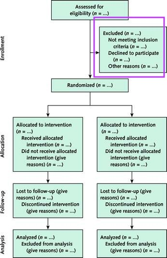
Eligibility:
People with estabilished disease of more than six months duration, with a serum level of alkaline phosphatase more than 2.5 times the normal level, and a pre-entry liver biopsy considered to be diagnostic of primary biliary cirrhosis.
Reasons for the exclusion from the study:
- serum level of aspartate aminotransferase more than 10 times the normal level
- serum level of aspartate aminotransferase more than 5 times the normal level and gamma globulin more than twice the normal level
- evidence of inflammatory bowel disease
- a malignant condition other than skin cancer
- evidence of extrahepatic obstruction
- use of cholestatic or epatotoxic drugs or excessive alcohol intake
- presence of hepatitis B surface antigen
I soggetti che sono stati inclusi nello studio avranno specificato per la variabile relativa al farmaco assegnato un valore di ‘D-penicillamine’ o ‘placebo’. I soggetti non inclusi nello studio avranno un valore della variabile uguale a ‘not randomized’. Ma quanti soggetti sono stati assegnati a D-penicillamine, quanti a placebo e quanti non randomizzati? Ddobbiamo considerare la variabile relativa all’assegnazione del farmaco. Ed utilizzare la funzione table() per generare una tabella con le frequenze assolute.
❗E’ buona norma aggiungere alla tabella dei ‘margini’ dove viene riportata la somma delle frequenze assolute. Per aggiungere i margini utilizziamo la funzione addmargins()
La variabile relativa all’assegnazione del farmaco è la variabile drug. Per ottenere il nome di tutte le variabili presenti nel dataset considero la funzione colnames(). [1]
Per richiamare la variabile drug dal dataset non faccio altro che richiamare il nome del dataset (data) seguito dal simbolo $ seguito dal nome della variabile. [2]
Per generare una tabella coi margini utilizzo la funzione table, seguita dalla funzione addmargins(). Ricorda che si possono concatenare le funzioni Section 18.1.1![3]
# [1]
colnames(data) # uso la funzione colnames() per vedere i nomi delle colonne: la variabile drug è quella relativa al farmaco [1] "ID" "entry_date" "bili" "albumin" "stage"
[6] "protime" "sex" "age" "spiders" "hepatom"
[11] "ascites" "alk.phos" "sgot" "chol" "trig"
[16] "platelet" "drug" "edema" "copper" "date_t1"
[21] "bili_t1" "albumin_t1" "protime_t1" "alk.phos_t1" "platelet_t1"
[26] "copper_t1" "date_t2" "bili_t2" "albumin_t2" "protime_t2"
[31] "alk.phos_t2" "platelet_t2" "copper_t2" "bili_t3" "albumin_t3"
[36] "protime_t3" "alk.phos_t3" "platelet_t3" "copper_t3" "fu.days"
[41] "status" "ast.UL" "gamma.g.g_dL" "ibd_0_1" "hepB.ant_0_1"
[46] "mal.cond_0_1"#[2]
data$drug # richiamo la variabile drug [1] "placebo" "placebo" "placebo" "placebo"
[5] "D-penicillamine" "D-penicillamine" "D-penicillamine" "D-penicillamine"
[9] "placebo" "D-penicillamine" "D-penicillamine" "D-penicillamine"
[13] "D-penicillamine" "D-penicillamine" "placebo" "D-penicillamine"
[17] "D-penicillamine" "placebo" "placebo" "D-penicillamine"
[21] "D-penicillamine" "placebo" "D-penicillamine" "placebo"
[25] "D-penicillamine" "D-penicillamine" "D-penicillamine" "D-penicillamine"
[29] "D-penicillamine" "D-penicillamine" "D-penicillamine" "D-penicillamine"
[33] "D-penicillamine" "placebo" "D-penicillamine" "D-penicillamine"
[37] "placebo" "D-penicillamine" "placebo" "placebo"
[41] "placebo" "D-penicillamine" "placebo" "D-penicillamine"
[45] "D-penicillamine" "placebo" "D-penicillamine" "D-penicillamine"
[49] "D-penicillamine" "placebo" "D-penicillamine" "placebo"
[53] "placebo" "placebo" "placebo" "D-penicillamine"
[57] "placebo" "placebo" "placebo" "placebo"
[61] "D-penicillamine" "D-penicillamine" "D-penicillamine" "D-penicillamine"
[65] "placebo" "placebo" "D-penicillamine" "placebo"
[69] "placebo" "placebo" "D-penicillamine" "D-penicillamine"
[73] "D-penicillamine" "placebo" "placebo" "placebo"
[77] "D-penicillamine" "placebo" "placebo" "D-penicillamine"
[81] "placebo" "placebo" "placebo" "D-penicillamine"
[85] "D-penicillamine" "placebo" "placebo" "D-penicillamine"
[89] "placebo" "placebo" "D-penicillamine" "placebo"
[93] "placebo" "placebo" "D-penicillamine" "placebo"
[97] "D-penicillamine" "placebo" "D-penicillamine" "D-penicillamine"
[101] "D-penicillamine" "placebo" "D-penicillamine" "placebo"
[105] "D-penicillamine" "placebo" "D-penicillamine" "placebo"
[109] "D-penicillamine" "placebo" "placebo" "D-penicillamine"
[113] "placebo" "D-penicillamine" "D-penicillamine" "placebo"
[117] "placebo" "placebo" "placebo" "placebo"
[121] "D-penicillamine" "placebo" "placebo" "placebo"
[125] "D-penicillamine" "placebo" "D-penicillamine" "placebo"
[129] "placebo" "D-penicillamine" "D-penicillamine" "placebo"
[133] "D-penicillamine" "D-penicillamine" "placebo" "placebo"
[137] "placebo" "placebo" "D-penicillamine" "placebo"
[141] "placebo" "D-penicillamine" "D-penicillamine" "D-penicillamine"
[145] "D-penicillamine" "D-penicillamine" "placebo" "D-penicillamine"
[149] "placebo" "D-penicillamine" "placebo" "placebo"
[153] "placebo" "placebo" "D-penicillamine" "D-penicillamine"
[157] "D-penicillamine" "placebo" "D-penicillamine" "D-penicillamine"
[161] "D-penicillamine" "D-penicillamine" "placebo" "D-penicillamine"
[165] "placebo" "D-penicillamine" "placebo" "D-penicillamine"
[169] "D-penicillamine" "placebo" "placebo" "D-penicillamine"
[173] "placebo" "placebo" "D-penicillamine" "placebo"
[177] "D-penicillamine" "placebo" "D-penicillamine" "D-penicillamine"
[181] "placebo" "placebo" "D-penicillamine" "D-penicillamine"
[185] "placebo" "placebo" "D-penicillamine" "placebo"
[189] "D-penicillamine" "placebo" "D-penicillamine" "placebo"
[193] "D-penicillamine" "placebo" "placebo" "placebo"
[197] "placebo" "D-penicillamine" "placebo" "D-penicillamine"
[201] "D-penicillamine" "placebo" "D-penicillamine" "D-penicillamine"
[205] "placebo" "placebo" "placebo" "placebo"
[209] "D-penicillamine" "D-penicillamine" "D-penicillamine" "D-penicillamine"
[213] "placebo" "D-penicillamine" "D-penicillamine" "placebo"
[217] "D-penicillamine" "placebo" "D-penicillamine" "placebo"
[221] "D-penicillamine" "D-penicillamine" "placebo" "placebo"
[225] "placebo" "D-penicillamine" "placebo" "D-penicillamine"
[229] "placebo" "D-penicillamine" "D-penicillamine" "placebo"
[233] "placebo" "D-penicillamine" "D-penicillamine" "placebo"
[237] "placebo" "D-penicillamine" "placebo" "placebo"
[241] "D-penicillamine" "placebo" "D-penicillamine" "placebo"
[245] "D-penicillamine" "placebo" "placebo" "D-penicillamine"
[249] "placebo" "D-penicillamine" "placebo" "placebo"
[253] "placebo" "placebo" "D-penicillamine" "placebo"
[257] "placebo" "placebo" "D-penicillamine" "D-penicillamine"
[261] "D-penicillamine" "D-penicillamine" "D-penicillamine" "D-penicillamine"
[265] "D-penicillamine" "placebo" "placebo" "placebo"
[269] "D-penicillamine" "placebo" "D-penicillamine" "placebo"
[273] "D-penicillamine" "placebo" "placebo" "placebo"
[277] "D-penicillamine" "D-penicillamine" "D-penicillamine" "placebo"
[281] "placebo" "D-penicillamine" "D-penicillamine" "D-penicillamine"
[285] "placebo" "placebo" "placebo" "D-penicillamine"
[289] "placebo" "placebo" "placebo" "D-penicillamine"
[293] "D-penicillamine" "placebo" "placebo" "D-penicillamine"
[297] "placebo" "D-penicillamine" "placebo" "D-penicillamine"
[301] "D-penicillamine" "placebo" "D-penicillamine" "placebo"
[305] "D-penicillamine" "D-penicillamine" "D-penicillamine" "placebo"
[309] "D-penicillamine" "placebo" "placebo" "D-penicillamine"
[313] "not randomized" "not randomized" "not randomized" "not randomized"
[317] "not randomized" "not randomized" "not randomized" "not randomized"
[321] "not randomized" "not randomized" "not randomized" "not randomized"
[325] "not randomized" "not randomized" "not randomized" "not randomized"
[329] "not randomized" "not randomized" "not randomized" "not randomized"
[333] "not randomized" "not randomized" "not randomized" "not randomized"
[337] "not randomized" "not randomized" "not randomized" "not randomized"
[341] "not randomized" "not randomized" "not randomized" "not randomized"
[345] "not randomized" "not randomized" "not randomized" "not randomized"
[349] "not randomized" "not randomized" "not randomized" "not randomized"
[353] "not randomized" "not randomized" "not randomized" "not randomized"
[357] "not randomized" "not randomized" "not randomized" "not randomized"
[361] "not randomized" "not randomized" "not randomized" "not randomized"
[365] "not randomized" "not randomized" "not randomized" "not randomized"
[369] "not randomized" "not randomized" "not randomized" "not randomized"
[373] "not randomized" "not randomized" "not randomized" "not randomized"
[377] "not randomized" "not randomized" "not randomized" "not randomized"
[381] "not randomized" "not randomized" "not randomized" "not randomized"
[385] "not randomized" "not randomized" "not randomized" "not randomized"
[389] "not randomized" "not randomized" "not randomized" "not randomized"
[393] "not randomized" "not randomized" "not randomized" "not randomized"
[397] "not randomized" "not randomized" "not randomized" "not randomized"
[401] "not randomized" "not randomized" "not randomized" "not randomized"
[405] "not randomized" "not randomized" "not randomized" "not randomized"
[409] "not randomized" "not randomized" "not randomized" "not randomized"
[413] "not randomized" "not randomized" "not randomized" "not randomized"
[417] "not randomized" "not randomized" #[3]
addmargins(table(data$drug, useNA = 'always')) # tabella per frequenze assolute farmaco
D-penicillamine not randomized placebo <NA> Sum
154 106 158 0 418 BONUS!
Per poter calcolare velocemente le frequenze relative per ogni categoria di farmaco assegnato, possiamo utilizzare la funzione prop.table(). Questa funzione vuole come argomento la tabella che avete appena generato e automaticamente calcola le proporzioni.
prop.table(table(data$drug))
D-penicillamine not randomized placebo
0.3684211 0.2535885 0.3779904 Ora, di tutti gli ID presenti nel dataset, dobbiamo estrarre solo quelli che sono stati inclusi nello studio. Per fare ciò consideriamo i seguenti comandi:
ids.rand = data$ID[data$drug != 'not randomized'] # genero un vettore con solamente gli ID dei inclusi (drug == 'not randomized')Ora che ho salvato tutti gli ID dei soggetti inclusi nello studio nel vettore ids.rand, posso ridurre il dataset intero per ottenerne uno dove sono presenti solo i soggetti inclusi. Ovvero, mantengo nel dataset, solamente le righe dei soggetti che hanno un ID presente (%in%) nel vettore ids.rand. Questo dataset ridotto viene salvato come inclusi
inclusi = data[data$ID %in% ids.rand, ] # filtro i soggetti che hanno ID presente nel vettore ids.not
dim(inclusi) # vedo se il numero di righe corrisponde ai 312 soggetti inclusi[1] 312 46# View(inclusi)Un’altra funzione più semplice da utilizzare è la funzione subset()
Ora non ci resta che considerare se i criteri di inclusione si applicano ai soggetti nel dataset ‘inclusi’
- serum level of aspartate aminotransferase more than 10 times the normal level
Normal ranges for AST are:
Men: 14 to 20 units/L
Women: 10 to 36 units/L
Per fare ciò, nella funzione table() inserisco le seguenti condizioni:
aspartate aminotransferase (AST) minore o uguale a (<=) 200 se contemporaneamente (&) il soggetto è (==) maschio oppure ( | ) aspartate aminotransferase (AST) minore o uguale a (<=) 360 se contemporaneamente (&) il soggetto è (==) femmina
❗ Il simbolo ‘==’ viene utilizzato per dire ‘equivalente a’, il simbolo ‘=’ viene utilizzato per assegnare e generare nuovi oggetti.
table(inclusi$ast.UL <= 200 & inclusi$sex == 'male' |
inclusi$ast.UL <= 360 & inclusi$sex =='female')
TRUE
312 - serum level of aspartate aminotransferase more than 5 times the normal level and gamma globulin more than twice the normal level
Normal value ranges are:
- Gamma globulin: 0.7 to 1.6 g/dL or 7 to 16 g/L
table(inclusi$ast.UL <= 100 & inclusi$sex == 'male' & inclusi$gamma.g.g_dL <= 3.2 |
inclusi$ast.UL <= 180 & inclusi$sex =='female' & inclusi$gamma.g.g_dL <= 3.2)
TRUE
312 Ora tocca a voi!
- evidence of inflammatory bowel disease (ibd_0_1)- a malignant condition other than skin cancer (mal.con_0_1)
- evidence of extrahepatic obstruction (extra.hep_0_1)
- use of cholestatic or epatotoxic drugs or excessive alcohol intake (ex_alch_0_1)
- presence of hepatitis B surface antigen (cholest_epatotoxic)
Provate a scrivere un programma per individuare quali sono le motivazioni di non inclusione nello studio dei soggetti ‘not randomized’ e a quanti soggetti corrispondono le seguenti motivazioni:
- serum level of aspartate aminotransferase more than 10 times the normal level
- serum level of aspartate aminotransferase more than 5 times the normal level and gamma globulin more than twice the normal level
- evidence of inflammatory bowel disease
- a malignant condition other than skin cancer
- evidence of extrahepatic obstruction
- use of cholestatic or epatotoxic drugs or excessive alcohol intake
- presence of hepatitis B surface antigen
Dovreste creare una tabella di questo tipo:
| Motivazione | Numero di soggetti non inclusi | Frequenza relativa (sul numero totale dei non inclusi) |
|---|---|---|
| serum level of aspartate aminotransferase more than 10 times the normal level | ||
| serum level of aspartate aminotransferase more than 5 times the normal level and gamma globulin more than twice the normal level | ||
| a malignant condition other than skin cancer | ||
| evidence of extrahepatic obstruction | ||
| use of cholestatic or epatotoxic drugs or excessive alcohol intake | ||
| presence of hepatitis B surface antigen |